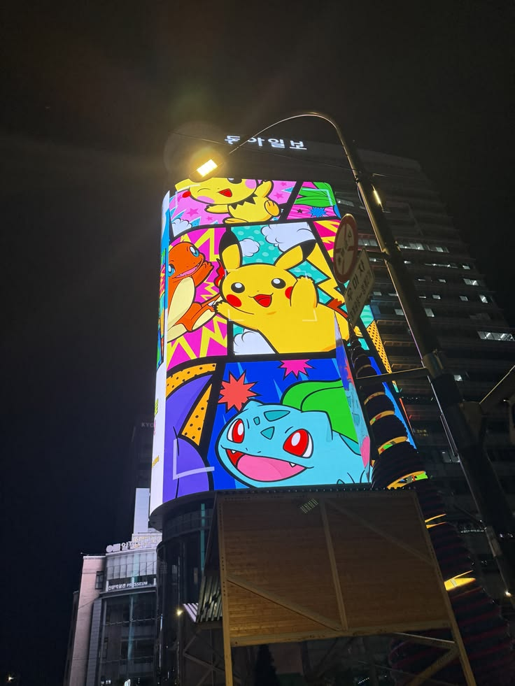
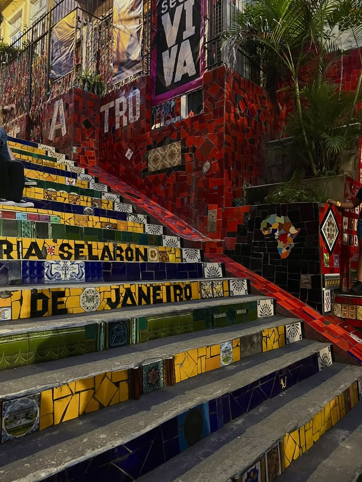
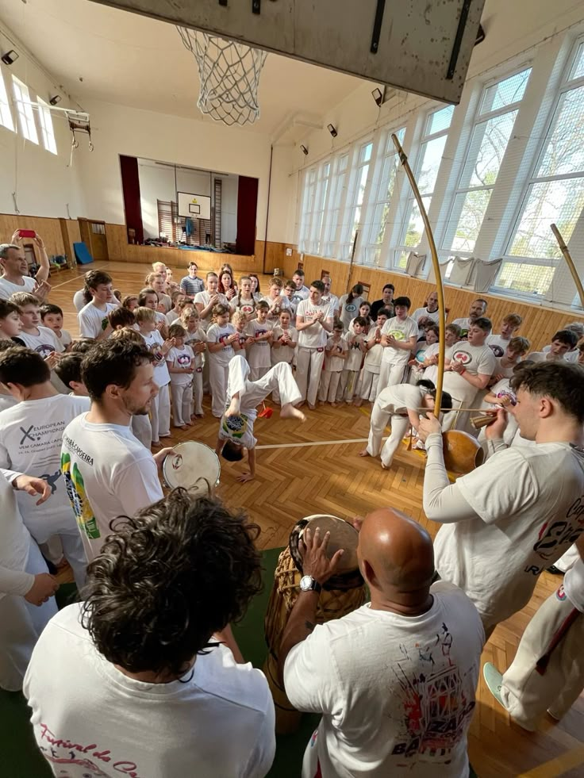
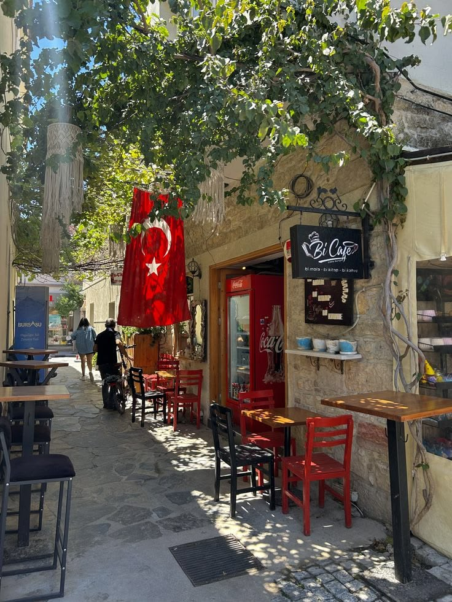
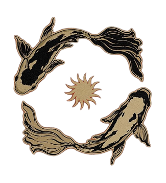
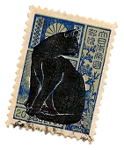
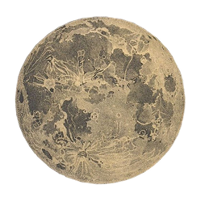

Viajar muda o olhar
Explore o Fernweh
Se perder
Para se encontrar
Novos
Outras
formas de viver

Encontros
pelo caminho

Além do
cartão-postal

Um novo
olhar
Viajar é entrar em contato com outras maneiras de viver.
Comece pelas histórias e descubra o que faz sentido para você.
Não é sobre riscar destinos de uma lista.
É sobre voltar com novas perguntas.
Eu viajo
para me encontrar





- Experiências
- Culturas
- Encontros
- Descobertas
- Transformações